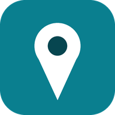

رقم الإصدار: 53
نزّل خريطة العراق العامة مرة وحدة (تغطي كل البلد بتفاصيل قليلة)، وبعدها نزّل المحافظات اللي تحتاجها حتى تظهر الشوارع والأسماء والمباني بالتفصيل. كلها تشتغل بدون إنترنت. يفضل التنزيل وأنت على شبكة Wi-Fi.
البحث عن الأماكن وحساب المسارات يحتاجون إنترنت. الخرائط المنزّلة تبقى على جوالك لين تحذفها.

نرسل مع رسالتك رقم الإصدار ونوع الجهاز فقط، بدون موقعك أو أي معلومات شخصية.
مصادر الخرائط والبيانات: © مساهمو OpenStreetMap، خرائط Protomaps، مباني العراق © Overture Maps Foundation (رخصة ODbL)، عرض الخريطة بـ MapLibre، حساب المسار OSRM، والطقس من Open-Meteo.com.
يُحدَّث الطقس كل 20 دقيقة تقريباً حسب موقعك، ويُحفظ على جوالك. بيانات الطقس من Open-Meteo.com (رخصة CC BY 4.0). تحذير الغبار تقديري ويعتمد على نماذج جوية، فلا تعتمد عليه وحده.
الأحمر = حركة شبه واقفة، والبرتقالي = حركة بطيئة. يظهر الزحام لما عدة سيارات تمشي ببطء بنفس المنطقة.
أدوات المطوّر (للتجربة فقط)
زر التجربة يعرض سيارات وهمية على جوالك فقط حتى تشوف الشكل، وتختفي بعد دقيقتين.
اختر نوع المكان حتى أعرض لك الأقرب إليك.
البحث عن الأماكن يحتاج إنترنت، والبيانات من خرائط OpenStreetMap فقد تنقص بعض الأماكن أو عناوينها. اضغط اسم المكان لعرض عنوانه.
الأماكن تنحفظ على جوالك بس. اضغط اسم المكان حتى تروح له. تحفظ المكان من النجمة اللي تظهر جنب اسم الوجهة بعد البحث.
اختر أنواع البلاغات اللي تظهر على الخريطة وتنبّهك:
التنبيه يظهر بالشاشة وينطق بالصوت أثناء الملاحة فقط، للبلاغات اللي على مسارك. كل ما كبرت المسافة يصير عندك وقت أكثر تغيّر فيه المسار. المسار البديل يظهر فقط إذا لقيت طريق يتجنب البلاغ.
تظهر المباني ببروز عند تقريب الخريطة (من مستوى 15) بالعرض المائل فقط. إذا حسّيت الجهاز يثقل أطفئها.
تظهر كل مباني العراق على الخريطة بأشكالها الحقيقية، وبارتفاعها الحقيقي لما يكون معروف. المباني اللي ارتفاعها مجهول تظهر بارتفاع تقديري (7 م). تحتاج إنترنت. إذا حسّيت الخريطة تثقل أطفئها.
المظهر التلقائي: نهاري من شروق الشمس إلى غروبها حسب موقعك، وليلي بعد الغروب. زر القمر على الخريطة يبدّل بسرعة بين النهاري والليلي.
يشمل تعليمات المنعطفات وتنبيهات البلاغات. بعض أجهزة الايفون تحدد شدة الصوت من أزرار الجهاز، فقد لا يؤثر المنزلق عليها.